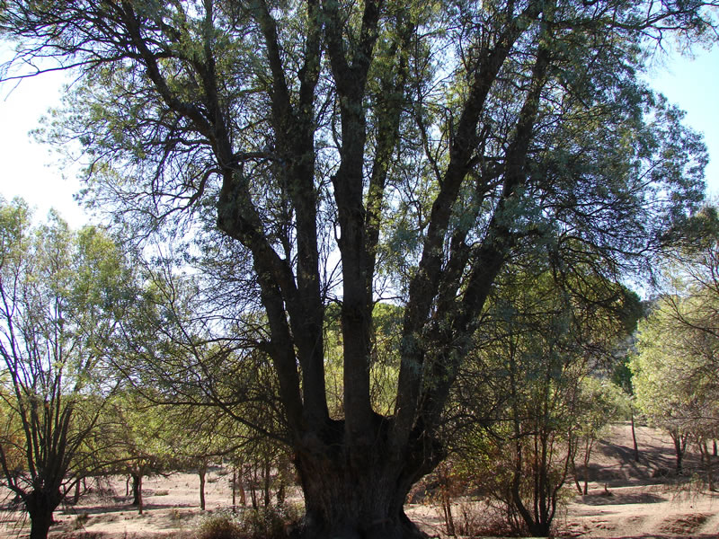
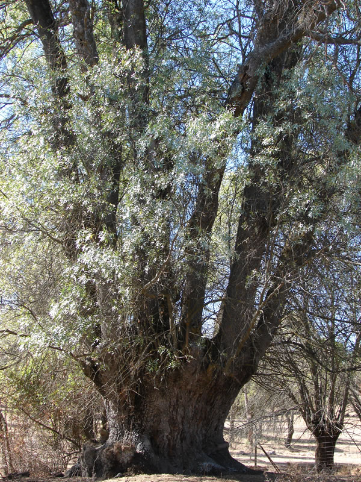

| MONUMENTOS | ||||
| LUGARES DE INTERÉS | ||||
|
||||
|
Este fresno es uno de los más viejos de España, según los expertos tiene alrededor de 700 años, unos 30 m. de altura y el tronco mide unos 9 m. de perímetro. Está situado en una finca particular, Santa Leonor, en el termino de Cebreros. El fresno es un árbol de hojas caducas florece en primavera, primeros de abril, antes que salgan las hojas. Antiguamente a falta de quinina la corteza del fresno se utilizaba para bajar la fiebre, sus hojas tienen un discreto efecto antiinflamatorio y laxante. Se ha utilizado contra el rehuma, la gota, procesos antiinflamatorios y dolorosos de las articulacione y de las vías urinarias. Tratamiento de edemas de origen cardiorenal. En tendinitis y esguinces. Facilita la pérdida de peso. Combate los parásitos intestinales. Hipertensión arterial, varices y hemorroides. En heridas y ulceraciones dérmicas. Los antiguos celta le conocían con el nombre de Nion. Pedanio Dióscorides, médico, botánico, farmacólogo de la antigua Grecia, del siglo I, decía: el fresno es un árbol muy querido, sus hojas aplicadas en emplastos y bebidas con vino y también en zumos socorren en caso de mordisco de víbora.   |
||